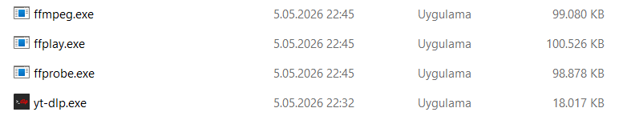

yt-dlp, internet üzerindeki binlerce web sitesinden (YouTube, İnstagram, Twitter vb.) video ve ses dosyalarını en yüksek kalitede indirmenize olanak tanıyan, açık kaynaklı ve ücretsiz bir komut satırı aracıdır.
Sektör standardı haline gelen eski youtube-dl projesinin geliştirilmiş ve güncel bir versiyonudur. Grafiksel bir arayüzü (penceresi) olmamasına rağmen, sunduğu hız ve özelleştirme imkanları sayesinde profesyonellerin bir numaralı tercihidir.
Neden yt-dlp?
Sınırsız Kaynak Desteği: Sadece YouTube değil, binlerce farklı platformdan veri çekebilir.
En Yüksek Kalite: İndirilen videoları en yüksek kalitelerde (1080p, 4K) ve isteğe bağlı olarak ses dosyası olarak (MP3, WAV vb.) indirebilirsiniz. Arıca videoları en iyi hız kalitesinde indirme yeteneğine sahiptir.
Ücretsiz ve Güvenilir: Ücretsiz ve reklamsızdır. Güvenilirdir, tamamen açık kaynaklıdır.
Kurulum
yt-dlp'yi aşağıdaki adımlarla rahatlıkla bilgisayarınıza kurabilirsiniz.

Tekli Video İndirme Terminal ekranında şu komutu kullanın:
.\yt-dlp "[Video Bağlantı Adresi (URL)]"
Oynatma Listesi İndirme Terminal ekranında şu komutu kullanın:
.\yt-dlp -o "%(playlist)s/%(playlist_index)02d - %(title)s.%(ext)s" "[Video Bağlantı Adresi (URL)]"
Bu komut önceki komuttan farklı olarak "-o" parametresi ile klasörleme yaparak her videoyu kendi klasörüne indirir ve sıralı bir şekilde kaydeder.
Eğer indirme esnasında bağlantı sorunu gibi bir hatayla karşılaşırsanız
.\yt-dlp --playlist-start [devam etmek istediğiniz sıra numarası] -o "%(playlist)s/%(playlist_index)s - %(title)s.%(ext)s" "URL"
şeklinde kaldığınız yerden indirmeye devam edebilirsiniz.